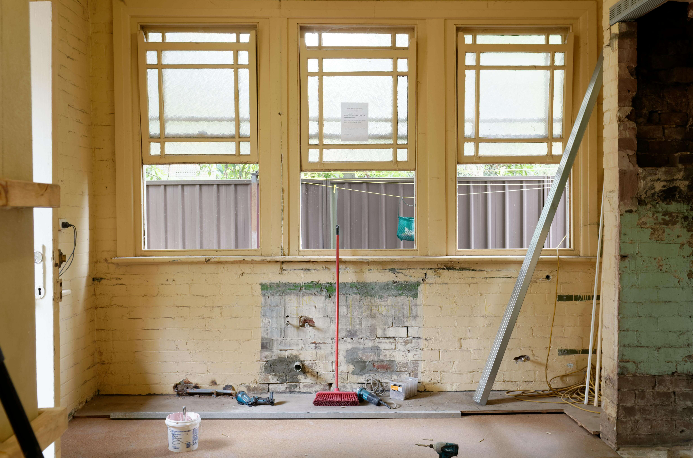

(833)
PROBAID
7762243

WHO PAYS FOR REPAIRS IN PROBATE? THE REAL ANSWER AND WORKAROUNDS
One of the most common questions in probate real estate is, “Who is going to pay for the repairs?”
The home often needs work. The paint may be peeling, the flooring may be outdated, and there could even be roof leaks, mold, or signs of water damage. Everyone agrees that fixing the house will help it sell for more money. The challenge is that no one wants to cover the cost upfront.
The executor may say that the estate has no liquid funds. The attorney may not be authorized to front expenses. And the heirs often want top dollar, but they are not willing to contribute to repairs. As a result, the house sits on the market or, worse, never gets listed at all.
This is where many probate deals stall or completely fall apart. But they do not have to. With the right planning, the right vendors, and the right guidance, the property can move forward whether funds are available or not.
Here is how I handle this situation to keep probate cases moving and prevent repairs from killing the deal.
EXPLAINING WHAT IS OPTIONAL AND WHAT IS REQUIRED
Not all repairs carry the same weight. Some are optional, cosmetic updates that may raise the sale price, while others are essential fixes that could prevent a deal from closing.
I walk attorneys, executors, and heirs through these differences clearly. If the house is livable, clean, and safe, it may not need a long list of costly improvements. Buyers may still make strong offers even if the home has not been updated in years.
However, if there are issues that will prevent financing or create red flags during inspections, those must be addressed first. For example, a leaking roof, unsafe electrical work, or a non-functioning water heater could cause lenders to reject the property. These types of problems can block the sale entirely, even if a buyer is interested.
By breaking down what is essential versus optional, I give families clarity. This allows them to make decisions based on facts, not emotions or assumptions.
BRINGING IN VENDORS WHO OFFER DELAYED PAYMENT
One of the biggest roadblocks in probate sales is the lack of available cash to cover repairs. Many executors assume that if the estate does not have liquid funds, there is no way to move forward with improvements. What they do not realize is that vendors exist who are willing to defer payment until close of escrow.
Over the years, I have built strong relationships with contractors, stagers, cleanout crews, and repair specialists who understand probate situations. They know estates can be property rich but cash poor. These vendors agree to perform necessary work upfront and receive payment once the property sells.
This arrangement provides a major advantage. It allows the estate to move forward without dipping into personal funds or waiting months to free up money. Repairs can be completed quickly, the home can be listed, and the costs are covered from the sale proceeds.
COORDINATING ALL WORK AND ACCESS PERSONALLY
Even when funding is solved, another problem remains: who is going to coordinate everything? Executors often live far away or have full-time jobs. Attorneys are focused on legal matters, not chasing down repair bids. And heirs rarely agree on who should take charge.
This is where I step in. I coordinate the entire process from start to finish. I gather bids, meet vendors at the property, approve work, and oversee progress. I ensure the right repairs are made without delays and that the home is ready for buyers as soon as possible.
Most importantly, I keep everyone informed with clear updates. Attorneys stay focused on their legal role, and families feel reassured that someone is actively managing the property.
OFFERING TRANSPARENT OPTIONS TO THE FAMILY
When multiple heirs are involved, opinions about repairs can vary widely. One heir may want to invest in updates to maximize the sale price, while another wants to sell quickly and avoid any added expenses.
I provide a transparent breakdown that helps everyone see the financial trade-offs. I show what the home could sell for if left as-is versus what it could sell for with targeted repairs or upgrades. I include holding costs, timelines, and realistic return on investment numbers.
Once the heirs see the clear differences, decisions become easier. They can agree on a plan based on facts rather than arguments. My role is not to push one option over the other but to clarify the outcomes so the family can choose with confidence.
GETTING THE PROPERTY LISTED EITHER WAY
The key to probate success is movement. Whether or not repairs are made, the home needs to be listed and sold in a timely manner. Stalling only creates tension and delays the settlement of the estate.
If repairs are completed, I market the property to traditional buyers who are looking for move-in ready homes. If the estate decides not to invest in repairs, I shift the strategy and target investors or cash buyers who specialize in homes sold as-is.
The important part is that the sale does not stop. The condition of the property may affect the strategy, but it should never prevent the case from moving forward.
WHY REPAIRS SHOULD NOT STALL PROBATE CASES
Repairs become a sticking point in probate because no one knows how to solve the funding problem or coordinate the work. But the truth is, repairs should never be the reason a probate case fails to move forward.
With the right agent in place, repairs can be assessed, prioritized, and managed without draining the estate or overwhelming the executor. Workarounds like deferred vendor payments make it possible to move forward even when funds are tight. And clear communication with heirs prevents disagreements from escalating into delays.
REAL-WORLD EXAMPLE

In one case, the estate involved a home that had been vacant for several years. The carpet was stained, the paint was old, and the kitchen had not been updated in decades. The heirs insisted they wanted top dollar, but the executor had no funds to invest in repairs.
I brought in vendors who agreed to clean, paint, and stage the home with payment deferred until closing. I coordinated the entire process, kept the attorney updated, and had the property listed within three weeks.
The home sold for significantly more than it would have in its as-is state, and the heirs walked away satisfied. Most importantly, the attorney never had to manage a single detail of the repairs.
BOTTOM LINE
Repairs often create tension and stall probate cases. Executors may not have funds, attorneys cannot authorize spending, and heirs want results without contributing. Without solutions, the property sits, unlisted and unsellable.
That is where I make the difference. I clarify what repairs are essential, bring in vendors who defer payment, manage the entire process, and present families with clear financial options. Whether the estate chooses to repair or sell as-is, I ensure the home gets listed and the case moves forward.
Probate sales succeed when the right systems are in place. Repairs should never be the reason a case fails to close.
If you are currently stuck in a probate case where repairs are holding everything up, let’s talk. I know how to move the process forward, even when funds are limited and opinions differ.
FREQUENTLY ASKED QUESTIONS ABOUT PROBATE REPAIRS
WHO PAYS FOR REPAIRS IN PROBATE?
In most cases, repairs in probate are paid from the estate’s funds. However, if the estate does not have cash available, the executor may look for solutions such as deferred payment vendors, family contributions, or selling the home as-is.
CAN HEIRS BE FORCED TO PAY FOR PROBATE REPAIRS?
Heirs are not legally required to pay for repairs. Their inheritance comes from the estate after debts and expenses are settled. If they want the property to sell for a higher price, they may choose to contribute voluntarily, but it cannot be forced.
WHAT IF THE ESTATE HAS NO MONEY FOR REPAIRS?
If the estate is cash poor but owns property, vendors may agree to complete repairs and get paid once the home sells. Another option is to sell the property as-is to an investor who is willing to make the repairs themselves.
DO ALL PROBATE HOMES NEED REPAIRS BEFORE SELLING?
No. Some homes can be sold as-is if they are safe, livable, and able to pass lender requirements. Cosmetic updates may help increase the price, but they are not always required to complete the sale.
HOW DO REPAIRS AFFECT THE PROBATE TIMELINE?
Repairs can delay a probate sale if no one coordinates them. However, with the right agent managing vendors and scheduling, repairs can often be done quickly without slowing the legal process.
IS IT BETTER TO SELL AS-IS OR MAKE REPAIRS?
It depends on the estate’s goals. Selling as-is is faster and avoids upfront costs, but often results in a lower sale price. Making targeted repairs can attract more buyers and raise the final value. A clear comparison of both options helps families decide what works best.
CAN THE EXECUTOR APPROVE REPAIRS WITHOUT COURT APPROVAL?
This depends on the type of authority granted by the court. With full authority under the Independent Administration of Estates Act (IAEA), an executor may approve certain repairs directly. With limited authority, the court may need to approve expenses.
WHO COORDINATES PROBATE REPAIRS?
The executor is responsible, but most executors do not have the time or knowledge to manage vendors, inspections, and cleanouts. A probate-trained real estate agent usually steps in to handle all coordination, ensuring repairs do not stall the case.
READY TO STOP LETTING REPAIRS HOLD UP THE SALE?
Whether the estate has funds or not, repairs should never be the reason a probate case stalls. I bring in the right vendors, manage every detail, and keep the property moving forward no matter the situation. Let’s talk today.
 833PROBAID.com
833PROBAID.com
 Info@833PROBAID.com
Info@833PROBAID.com
Because repairs in probate should never be a dead end—only a problem I’ve already solved.